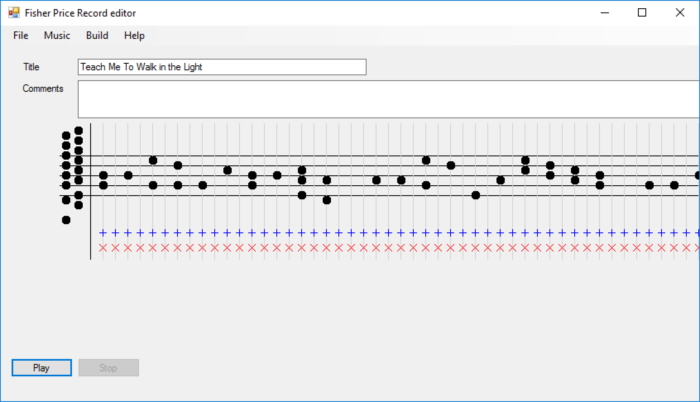
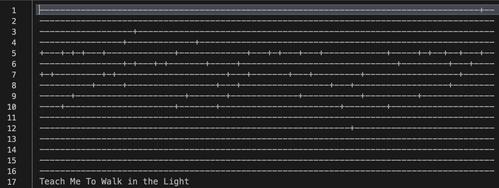
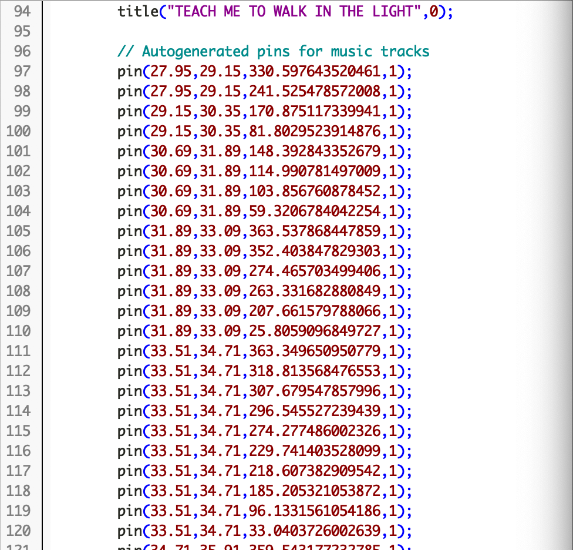
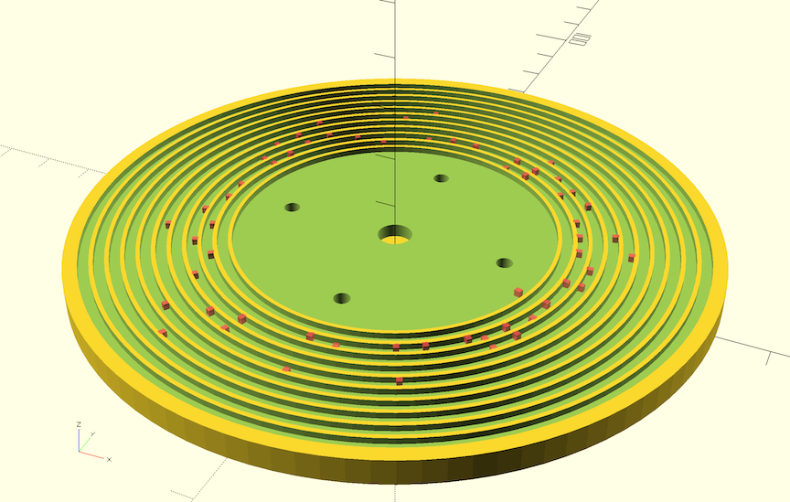

Making a Record for the Fisher Price Record Player
A while ago I linked to an Instructable on how to create your own Fisher Price record. For Christmas, I decided to actually go for it, and make one of these for my kids.
I opted to keep the theme appropriate, and do a couple songs my kids would appreciate, so I went for two children's hymns. I could easily find the music for Teach Me to Walk in the Light and Jesus Wants me for a Sunbeam. My job was to transcribe that music into Fred Record Player.

One of the main challenges was that some notes literally don't exist in the actual record player (and subsequently, aren't provided in the tool). So, I had to adjust the key of the music, to make it still sound right, despite the adjustment. Even still, on one of the songs there was one note I couldn't get perfect. Good enough.

You can see the raw music file isn't anything fancy, but I wouldn't have any concept of what the song sounds like without the Player itself. Also, the Fred Record Player generates the OpenSCAD file. Somehow it translates that somewhat simple file into a series of instructions the 3D-file generator can follow.

It uses those instructions to generate the rendering of the record itself. It's kind of cool - you can see the little pips it is generating around the main grooves.

OpenSCAD is responsible for generating the .stl file. That's the file you need to use to actually print the record. I don't yet have a 3D printer, so I opted to print the record through Shapeways. It took about 10 days for my order to show up at my home, and it plays perfectly. I know this is super nerdy, but if it's actually of interest to you, and you're even remotely computer capable, you can likely pull something like this off as well.
Whether you'd like some of the intermediate files, or if you'd simply like to print this exact same record, I've attached the files for you. Happy making!
Making a Record for the Fisher Price Record Player Files...
- Prior: G2 20190214